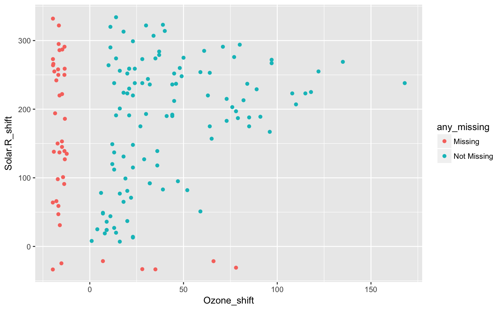

Shift the values, add shadow, add missing label
cast_shadow_shift_label(data, ...)
| data | data.frame |
|---|---|
| ... | One or more unquoted expressions separated by commas. These also respect the dplyr verbs "starts_with", "contains", "ends_with", etc. |
data.frame with the shadow and shadow_shift vars, and missing labels
airquality %>% cast_shadow_shift_label(Ozone)#> # A tibble: 153 x 4 #> Ozone Ozone_NA Ozone_shift any_missing #> <int> <fctr> <dbl> <chr> #> 1 41 !NA 41.00000 Not Missing #> 2 36 !NA 36.00000 Not Missing #> 3 12 !NA 12.00000 Not Missing #> 4 18 !NA 18.00000 Not Missing #> 5 NA NA -19.72321 Missing #> 6 28 !NA 28.00000 Not Missing #> 7 23 !NA 23.00000 Not Missing #> 8 19 !NA 19.00000 Not Missing #> 9 8 !NA 8.00000 Not Missing #> 10 NA NA -18.51277 Missing #> # ... with 143 more rowsairquality %>% cast_shadow_shift_label(Ozone, Solar.R)#> # A tibble: 153 x 7 #> Ozone Solar.R Ozone_NA Solar.R_NA Ozone_shift Solar.R_shift any_missing #> <int> <int> <fctr> <fctr> <dbl> <dbl> <chr> #> 1 41 190 !NA !NA 41.00000 190.00000 Not Missing #> 2 36 118 !NA !NA 36.00000 118.00000 Not Missing #> 3 12 149 !NA !NA 12.00000 149.00000 Not Missing #> 4 18 313 !NA !NA 18.00000 313.00000 Not Missing #> 5 NA NA NA NA -19.72321 -33.57778 Missing #> 6 28 NA !NA NA 28.00000 -33.07810 Missing #> 7 23 299 !NA !NA 23.00000 299.00000 Not Missing #> 8 19 99 !NA !NA 19.00000 99.00000 Not Missing #> 9 8 19 !NA !NA 8.00000 19.00000 Not Missing #> 10 NA 194 NA !NA -18.51277 194.00000 Missing #> # ... with 143 more rows# replicate the plot generated by geom_miss_point() library(ggplot2) airquality %>% cast_shadow_shift_label(Ozone,Solar.R) %>% ggplot(aes(x = Ozone_shift, y = Solar.R_shift, colour = any_missing)) + geom_point()